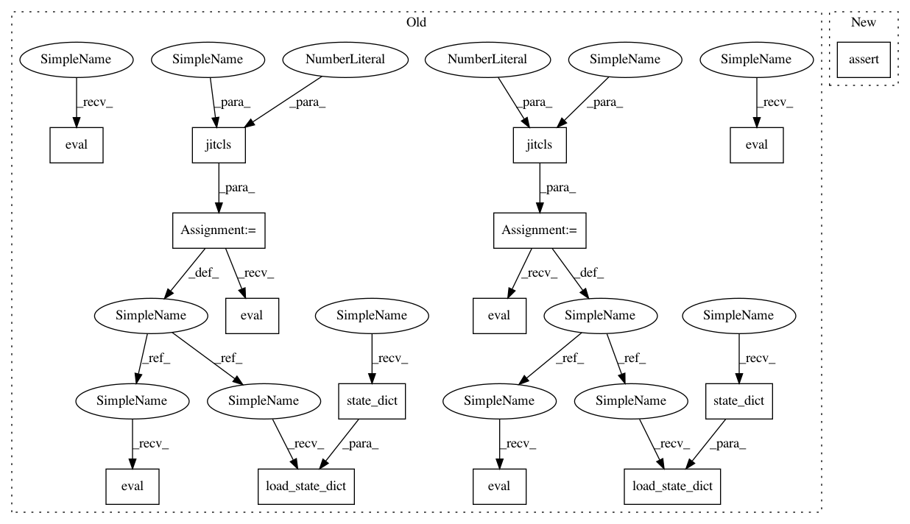

20bfe4e1093bdd85d27d49f6c06c3e00f6f769b0,test/nn/conv/test_dna_conv.py,,test_dna_conv,#,5
Before Change
assert conv.__repr__() == "DNAConv(32, heads=4, groups=8)"
assert conv(x, edge_index).size() == (num_nodes, channels)
jitcls = conv.jittable(x=x, edge_index=edge_index)
jitconv = jitcls(channels, heads=4, groups=8, dropout=0.5)
jitconv.load_state_dict(conv.state_dict())
jittedconv = torch.jit.script(jitconv)
conv.eval()
jitconv.eval()
jittedconv.eval()
assert (torch.abs(conv(x, edge_index) -
jitconv(x, edge_index)) < 1e-6).all().item()
assert (torch.abs(conv(x, edge_index) -
jittedconv(x, edge_index)) < 1e-6).all().item()
conv = DNAConv(channels, heads=1, groups=1, dropout=0.5)
assert conv.__repr__() == "DNAConv(32, heads=1, groups=1)"
assert conv(x, edge_index).size() == (num_nodes, channels)
jitcls = conv.jittable(x=x, edge_index=edge_index)
jitconv = jitcls(channels, heads=1, groups=1, dropout=0.5)
jitconv.load_state_dict(conv.state_dict())
jittedconv = torch.jit.script(jitconv)
conv.eval()
jitconv.eval()
jittedconv.eval()
assert (torch.abs(conv(x, edge_index) -
jitconv(x, edge_index)) < 1e-6).all().item()
assert (torch.abs(conv(x, edge_index) -
jittedconv(x, edge_index)) < 1e-6).all().item()
After Change
jit_conv = conv.jittable(x=x, edge_index=edge_index)
jit_conv = torch.jit.script(jit_conv)
assert jit_conv(x, edge_index).tolist() == out.tolist()
conv = DNAConv(channels, heads=1, groups=1, dropout=0.0)
assert conv.__repr__() == "DNAConv(32, heads=1, groups=1)"
out = conv(x, edge_index)
In pattern: SUPERPATTERN
Frequency: 3
Non-data size: 15
Instances
Project Name: rusty1s/pytorch_geometric
Commit Name: 20bfe4e1093bdd85d27d49f6c06c3e00f6f769b0
Time: 2020-06-09
Author: matthias.fey@tu-dortmund.de
File Name: test/nn/conv/test_dna_conv.py
Class Name:
Method Name: test_dna_conv
Project Name: rusty1s/pytorch_geometric
Commit Name: 14fc2f8fd8e1741145d6b6ef0c052792ae01a99d
Time: 2020-06-08
Author: matthias.fey@tu-dortmund.de
File Name: test/nn/conv/test_gmm_conv.py
Class Name:
Method Name: test_gmm_conv
Project Name: rusty1s/pytorch_geometric
Commit Name: 20bfe4e1093bdd85d27d49f6c06c3e00f6f769b0
Time: 2020-06-09
Author: matthias.fey@tu-dortmund.de
File Name: test/nn/conv/test_rgcn_conv.py
Class Name:
Method Name: test_rgcn_conv
Project Name: rusty1s/pytorch_geometric
Commit Name: 20bfe4e1093bdd85d27d49f6c06c3e00f6f769b0
Time: 2020-06-09
Author: matthias.fey@tu-dortmund.de
File Name: test/nn/conv/test_dna_conv.py
Class Name:
Method Name: test_dna_conv